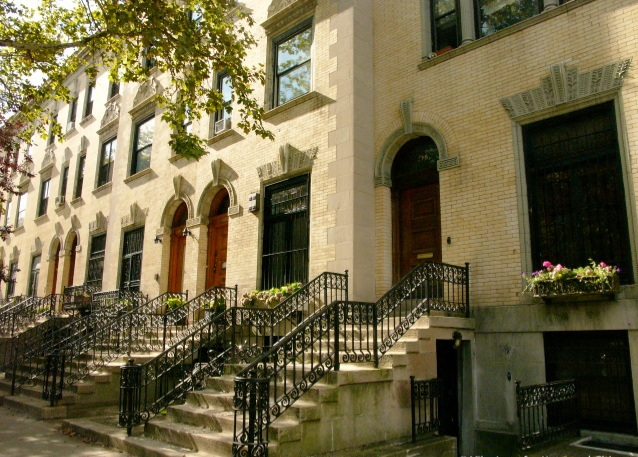

Shared spaces
Strivers Row
A historic district in Harlem, known for its well-preserved row houses and cultural significance.
Background
Strivers Row, officially known as the St. Nicholas Historic District, was developed in the late 19th century. The row houses were originally built for affluent white residents but later became home to prominent African American professionals, earning the nickname 'Strivers Row.' The district is a symbol of Harlem's rich cultural heritage.
Original AI-assisted background; not independently verified.
From the original map
Dishonorable mention. Sad that the little roads running through the block are for cars instead of being gardens for people like down at sullivan st.
Homes and shared residential spaces may be private. View from public streets unless entry is clearly permitted; map pins are reference points, not confirmed entrances.
Nearby places
Straight-line distances, not walking routes.
Discussion & corrections

Photo credits
Krista Vista40.81754, -73.94396 · Explore the surrounding area ↗